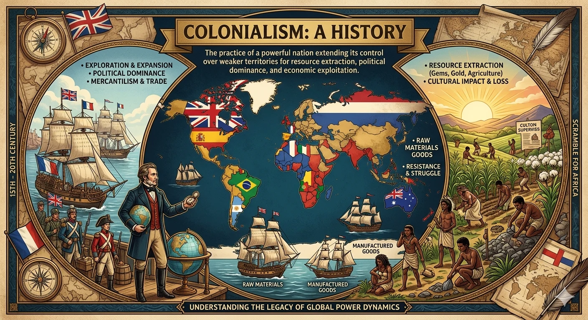

Chapter Overview
Key skills you will develop by the end of Chapter 1: Colonization of the Subcontinent.
History: Colonization of the Subcontinent
Complete chapter notes with all Q&A, key battles, timelines and vocabulary: PDF format
Please note: This page is a concise preview. The complete notes including all questions, phrasings, and vocabulary are in the PDF. Download it for the full learning material.
Chapter Timeline
Important dates you must memorize for exam questions.
Chapter Diagrams
Illustrated notes from W.H. Academy Class 8 History chapter notes.

Colonialism: Definition and Causes
What colonialism is, why it happened, and why it cannot be justified.
Definition of Colonialism
1. What is colonialism? How is it harmful for colonized countries?
It was harmful because colonized countries lost control of their resources, land, governments, and cultures. Their wealth was extracted to benefit the colonizing power, leaving local populations poor and powerless.
2. How is colonialism different from simple trade between countries?
3. Name all the major causes of colonialism.
1. Economic gain: To bring wealth from colonies through trade and resources.
2. New sea routes: Explorers like Vasco da Gama and Columbus opened paths to Asia and Africa.
3. Unstable political conditions: Weak governments in Asia and Africa invited European intervention.
4. Civilizing mission: Europeans claimed to spread religion and culture (used as an excuse).
5. Raw materials: Needed cheaply for growing European industries.
6. New markets: To sell European manufactured goods to large colonial populations.
4. Why did the 'civilizing mission' NOT justify colonialism?
European Powers in the Subcontinent
Portuguese, Dutch, French, British — from first contact to the Battle of Wandiwash.
Portuguese and British in India
1. Who were the first Europeans to arrive in the Indian subcontinent?
At first, the Portuguese traded peacefully. Later they adopted harsher policies and for almost a hundred years maintained themselves as the sole traders in India, making Portugal very wealthy. Their power declined by the end of the 16th century as the Dutch and British began to compete.
2. What was the East India Company? Which major ports did the British set up?
The British established major ports in Madras, Surat, and Bombay.
3. What was the Battle of Wandiwash (1760)? Why is it a turning point?
It was a turning point because before 1760 both Britain and France were powerful rivals. After Wandiwash, Britain had no major European rival left to challenge their dominance.
Invasions That Weakened the Mughal Empire
Nadir Shah, Ahmad Shah Abdali, and their impact on Mughal authority.
Nadir Shah and Ahmad Shah Abdali
1. Who was Nadir Shah? What happened at the Battle of Karnal (1739)?
In 1739, Nadir Shah invaded India and defeated the Mughals easily in the Battle of Karnal. He captured Delhi, thousands were killed, and he took the renowned Peacock Throne of Shah Jahan. His invasion shattered the central authority of the Mughals permanently.
2. Who was Ahmad Shah Abdali? How did his invasions affect the subcontinent?
His repeated invasions drained resources, disrupted governance, and further undermined Mughal authority — making it easier for the British to eventually take control.
Key Battles and EIC Control
Battle of Plassey, Buxar, Third Battle of Panipat, and the takeover of Delhi.
Battle of Plassey (1757)
1. What was the Battle of Plassey? Who were the parties and who won?
In 1756, Siraj-ud-Daula — encouraged by the French — attacked the EIC base in Calcutta. In response, Sir Robert Clive led EIC soldiers to fight back.
Mir Jafar, Siraj-ud-Daula's own general, betrayed him by helping Robert Clive achieve victory. This treachery led directly to the defeat and death of Siraj-ud-Daula. Mir Jafar was rewarded by being made the new Nawab of Bengal.
2. What was the Battle of Buxar (1764)? Why was it more significant than Plassey?
Buxar was more significant than Plassey because at Plassey the British won through betrayal. At Buxar, the British defeated a much larger combined alliance in a real military confrontation — proving their power was undeniable.
3. What was the Third Battle of Panipat (1761)? How did it benefit the British?
This indirectly benefited the British because the divided, weakened Marathas could not unite against them. When the British fought the Marathas later, they faced fragmented forces — making the British takeover of Delhi in 1803 much easier.
4. How did the British take over Delhi in 1803?
The Mughal Emperor Shah Alam II was forced to accept 'British Protection' — demonstrating the complete weakness of the Mughals and the undeniable dominance of the British.
Resistance in the Deccan — Haider Ali and Tipu Sultan
1. Who was Haider Ali? Which kingdom offered the strongest resistance to the British?
Haider Ali and his son and successor Tipu Sultan together engaged with British forces in four Anglo-Mysore Wars, each lasting multiple years — making them the most formidable opponents of British expansion in the Deccan.
Chapter 1 Vocabulary
Important terms — learn these definitions for exam questions.
| Term | Definition |
|---|---|
| Colonialism | When a powerful country takes direct political control of a weaker country and uses its resources |
| Civilizing mission | Europeans' claim that they were bringing culture/education to others — used as an excuse for colonialism |
| Raw materials | Natural substances like cotton, iron, or wood used in manufacturing |
| Sole trader | The only or exclusive trader — no competition from anyone else; monopoly |
| East India Company (EIC) | A British trading company established by London merchants that eventually became a governing power in India |
| Sepoys | Indian soldiers employed and trained by the British East India Company |
| Supremacy | Having the highest power and authority above all others |
| Nadir Shah | Persian ruler (Nadir Quli Khan) who invaded India in 1739 and took the Peacock Throne |
| Peacock Throne | The magnificent royal throne of Mughal Emperor Shah Jahan, taken by Nadir Shah in 1739 |
| Central authority | The main government or power controlling a whole country or empire |
| Battle of Plassey | 1757 battle between EIC and Nawab Siraj-ud-Daula — British won through Mir Jafar's betrayal |
| Mir Jafar | Siraj-ud-Daula's general who betrayed him and helped the British win at Plassey; became Nawab of Bengal as reward |
| Treachery | The act of betraying someone who trusted you; extreme disloyalty |
| Battle of Buxar | 1764 battle — British defeated combined forces of Mir Qasim, Nawab of Awadh, and Mughal Emperor |
| Undeniable | So obvious that it cannot be questioned or denied |
| Third Battle of Panipat | 1761 — Ahmad Shah Abdali crushingly defeated the Marathas; they divided and weakened |
| Crushing defeat | A very severe and complete loss in battle |
| British Protection | Forced arrangement where the Mughal Emperor was placed under British authority, presented as 'protection' |
| Haider Ali | Military ruler of Mysore who rose to power and led resistance against the British in the Deccan |
| Formidable | Inspiring fear or respect — very powerful and hard to defeat |
Test Yourself: Chapter 1 Quiz
Chapter-wise MCQs aligned with APSACS and FBISE syllabus. No login required.
Start Quiz NowNeed Live Explanation of Colonization History?
Join W.H. Academy: Live tutoring and full chapter solutions for APSACS and FBISE students in Rawalpindi and online across Pakistan.